Contact Housings Releasing
Contact Housings Releasing
Secondary Lock
The secondary lock is a housing securing mechanism (second locking mechanism) that secures all wires in one terminal housing. If a secondary lock is installed at a terminal housing, it must always be opened or removed using specified tool before releasing and pulling out individual crimp contacts.
Secondary lock is distinguished by a different color from the rest of the contact housing. It simplifies recognizing the secondary lock and clarifies its function.
The shapes of the terminal housings depicted here are only a selection which, as an example, should make clear the various functions of the secondary lock.
Example 1:
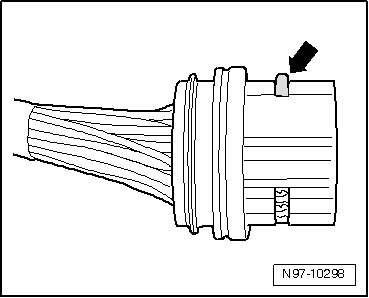
Housing securing mechanism is released by removing a "comb" - arrow -.
Example 2:
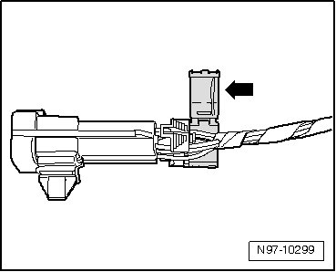
Housing securing mechanism is released by opening a "flap" - arrow -.
Example 3:
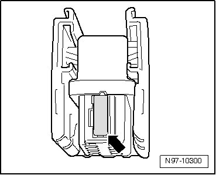
Housing securing mechanism can be released by disengaging a " slider" - arrow -.
Primary Lock
The primary lock is the locking mechanism of one individual crimp contact in terminal housing.
If necessary, housing securing mechanisms (secondary locks) must be released or removed using specified tool before releasing the contacts. Refer to --> [ Secondary Lock ].
The shapes of the primary locks depicted in the following are only a selection which, as an example, should make clear the various functions of the secondary lock.
• Round connector systems, refer to --> [ Round Connector Systems ]
• Flat connector systems, refer to --> [ Flat Connector Systems ]
• Special connector systems, refer to --> [ Special Connector Systems ]
The application of the correct release tools to the respective locks can be found in the table in user's instructions for VAS 1978/35.
Round Connector Systems
• If necessary, housing securing mechanisms (secondary locks) must be released or removed using specified tool before releasing the contacts. Refer to --> [ Secondary Lock ].
- Guide the release tool which fits the terminal housing into release channel on terminal housing.
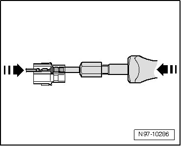
- Grasp contact at wire and push it gently into terminal housing - arrow -.
• By pushing contact in direction of terminal housing, retaining tabs of contact are lifted off the housing shoulder and can be released using the release tool.
- At the same time, push release tool in direction of terminal housing - arrow - and pull the released contact out of terminal housing.
- After removing the contact, release tool can be pulled out of terminal housing again.
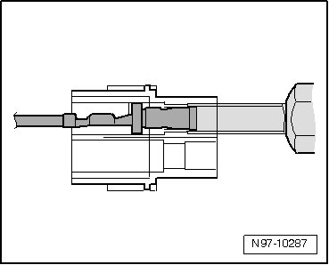
Flat Connector Systems
• If necessary, housing securing mechanisms (secondary locks) must be released or removed using specified tool before releasing the contacts. Refer to --> [ Secondary Lock ].
Flat connector system with one retaining tab:
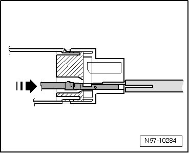
- Guide the release tool which fits the terminal housing into release channel on terminal housing.
- Grasp contact at wire and push it gently into terminal housing - arrow -.
• By pushing contact in direction of terminal housing, retaining tab of contact is lifted off the housing shoulder and can be released using the release tool.
- At the same time, push release tool in direction of terminal housing and pull the released contact out of terminal housing - arrow -.
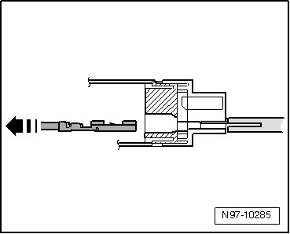
- After removing the contact, release tool can be pulled out of terminal housing again.
Flat connector system with two retaining tabs:
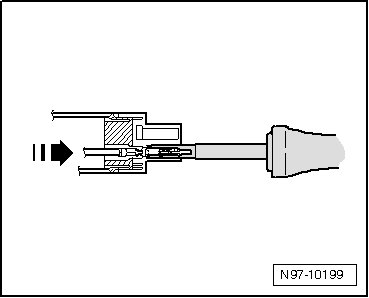
- Guide the release tool which fits the terminal housing into release channel on terminal housing.
- Grasp contact at wire and push it gently into terminal housing until it stops - arrow -.
• By pushing contact in direction of terminal housing, retaining tabs of contact are lifted off the housing shoulder and can be released using the release tool.
- At the same time, push release tool in direction of terminal housing and pull the released contact out of terminal housing - arrow -.
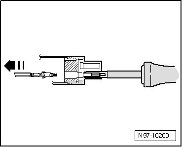
- After removing the contact, release tool can be pulled out of terminal housing again.
Asymmetrical:
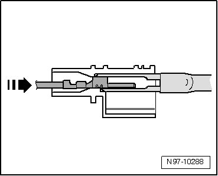
- Guide the release tool which fits the terminal housing into release channel on terminal housing.
- Grasp contact at wire and push it gently into terminal housing - arrow -.
• By pushing contact in direction of terminal housing, retaining tabs of contact are lifted off the housing shoulder and can be released using the release tool.
- At the same time, push release tool in direction of terminal housing and pull the released contact out of terminal housing - arrow -.
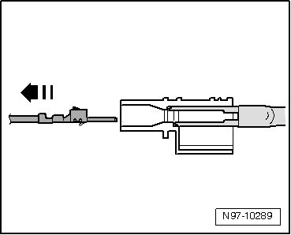
- After removing the contact, release tool can be pulled out of terminal housing again.
Special Connector Systems
• If necessary, housing securing mechanisms (secondary locks) must be released or removed using specified tool before releasing the contacts. Refer to --> [ Secondary Lock ].
Faston contacts:

- Guide the release tool which fits the terminal housing into release channel on terminal housing.
- Grasp contact at wire and push it gently into terminal housing.
• By pushing contact in direction of terminal housing, retaining tabs of contact are lifted off the housing shoulder and can be released using the release tool.
- At the same time, push release tool in direction of terminal housing and pull the released contact out of terminal housing - arrow -.
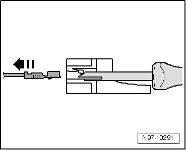
- After removing the contact, release tool can be pulled out of terminal housing again.
GT 150/280 contacts:
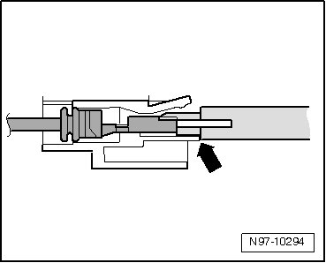
- Guide the release tool which fits the terminal housing under retaining tab into terminal housing.
- Push tool into terminal housing until it stops - arrow -.
Contact is ejected from the terminal housing.
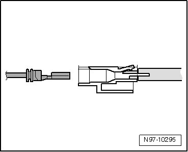
- After ejecting the contact, release tool can be pulled out of terminal housing again.
Contacts without retaining tabs:
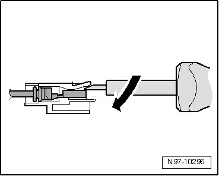
- Insert release tool under retaining tab of terminal housing.
- Push release tool through until it stops by gently lifting - arrow -.
Contact is ejected from the terminal housing.
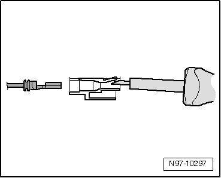